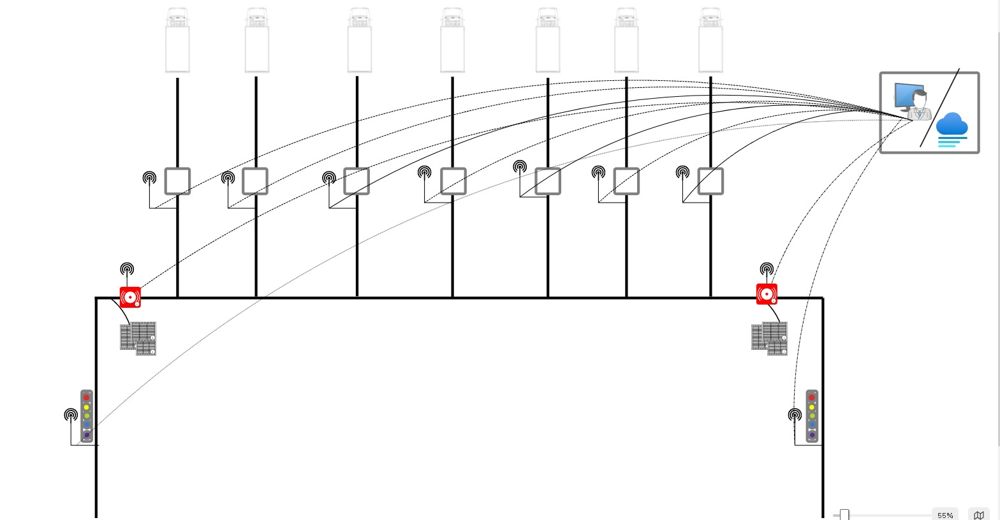

System Architecture, Technical Reference & Deployment Roadmap
Prepared by
Hemed Salum Kabangila
Role
Field Student — Software Architect & Developer
Prepared for
Mkwawa Leaf Tobacco Limited
Date
August 2026
Contents
1Foreword
2Executive Summary
3Current Operations — The Manual Process
4The MTS Vision — Full-Scale Automated Design
5Proof of Concept — The Working Demonstration
6System Architecture
7Technical Reference
7.1MTS Demo — Central Server
7.2RFID Antenna — Fixed Checkpoint Reader
7.3Scanner — Intake Handheld Device
8Path to Full Deployment
9Appendix — Glossary & Reference Tables
1
Foreword
I wrote the first line of this system after watching a receiving shift at
Mkwawa Leaf for the better part of a day. Fourteen people were doing work
that came down, in the end, to the same three questions asked over and
over: which bale is this, how much does it weigh, and does that number
agree with what was declared. Two of those questions can be answered by a
chip the size of a fingernail and a scale that already sits under every
conveyor. The third is arithmetic.
What follows is my account of building the system that answers those
three questions automatically — why it is built the way it is, what broke
along the way and how I fixed it, and what it would take to run it across
all seven receiving lines instead of the one I used to prove it out. I have
tried to write it so that someone who has never opened the source code can
follow the reasoning, and so that someone who has to open the source code
next year can find their way around it quickly.
Hemed Salum Kabangila
Field Student — Software Architect & Developer
2
Executive Summary
Mkwawa Leaf Tobacco Limited receives baled tobacco from contracted farms
by truck, across seven receiving conveyor lines. Every bale must be
identified and weighed against the figure declared when it was baled, so
that discrepancies — under-filled bales, mislabelled grades, tampering —
are caught before the bale moves further into the factory. Today that
identification and weighing is done by hand, at every line, by an operator
with a barcode scanner and a scale wired to a PC. A second worker per line
stands by to physically remove any bale the computer flags. Fourteen
people are committed to this single step of the receiving process.
MTS — the Mkwawa Tracking System — replaces the barcode scanner and the
manual read with passive UHF RFID. A bale is tagged once, at the farm, when
it is packed onto the truck. From that point forward nobody needs to scan
anything by hand: a fixed reader at the checkpoint identifies the bale
automatically as it passes, the scale beneath it reports the weight, and a
central server makes the validation decision in well under a second. A
second, independent reader further down the line re-checks the outcome and
sounds an alarm only if the bale was flagged, so that the one remaining
worker per offload point knows exactly which bale to pull.
14 → 2
Workers required, full deployment
7
Receiving lines covered
<1s
Validation decision time
The system described in this document has been built and proven on a
single receiving line — end to end, from farm-side tagging through to a
live flagged-bale alarm — and is documented here exactly as it stands
today. Section 4 sets out the full seven-line design this pilot is
built to scale into; Section 8 sets out precisely what stands between
the current pilot and that full deployment. Nothing in this document
describes work that has not actually been built, tested, and run against
real hardware on the factory floor, except where it is explicitly marked
as a proposal for the next phase.
3
Current Operations — The Manual Process
Mkwawa Leaf's receiving floor has seven conveyor lines, each fed
directly by trucks arriving from contracted farms. Each line runs the same
manual process, independently, with its own staff and its own equipment:
Figure 1 · The Manual Process, Per Line
Identical at all seven lines. The barcode scanner and the
scale are both wired directly into the line's own PC; nothing is shared
or centralised between lines.
An operator stationed at the line holds a wired barcode scanner. As each
bale arrives, they physically locate its barcode sticker, scan it, and the
PC looks up the bale's declared weight and grade. The scale — connected to
the same PC over a serial cable — reports the bale's actual weight, and
the PC's software compares the two figures and marks the bale as passed or
flagged. A second worker, stationed just past the scale, watches for a
flagged result and physically lifts that bale off the conveyor by hand.
This works, and it has worked for years, but it has three costs that
compound across seven lines running in parallel:
Labour
Two people per line, seven lines, every shift: fourteen people whose
entire task is reading a barcode and watching for a flag. None of them are
doing anything a computer cannot do faster and more consistently.
Speed
Each bale waits on a human to physically aim a scanner at its barcode
and pull the trigger. On a receiving floor moving hundreds of bales a
shift, that single manual step sets the pace for the entire line.
Consistency
A barcode sticker that has been rained on, folded, or partially torn in
transit is unreadable to a scanner in a way it would not be to an RFID
reader, which does not require line of sight or an intact printed surface.
A tired operator on a long shift can also simply miss a bale, or scan the
wrong one, in a way an automated checkpoint cannot.
4
The MTS Vision — Full-Scale Automated Design
The design I am proposing keeps the physical layout of the receiving
floor exactly as it is — seven lines, trucks unloading as they do today —
and replaces only the identification and weighing step at each line, plus
the offload step at the end. Nothing about how bales are trucked in or how
they move once past the checkpoint changes.
Every one of the seven lines gets its own RFID checkpoint: a fixed
reader antenna positioned over the conveyor, paired with the same scale
already installed there. As a tagged bale passes, the reader identifies it
and the scale weighs it; the central server validates the two figures
against each other and records the outcome. The bale is not stopped or
slowed for this — it continues moving regardless of the result, the same
way it does under the manual process today.
Every one of those seven checkpoints reports back to the same central
server independently and continuously — there is no per-line dashboard, no
separate record per conveyor. One supervisor watching one screen can see
every line's activity as it happens, which is not something the current
manual setup, with seven standalone PCs, offers at all today.
Downstream of the seven individual lines, the physical conveyors
themselves already merge: three of the seven lines feed into one trunk
conveyor, and the remaining four feed into a second trunk. This is where
the second checkpoint sits — one antenna per trunk, positioned right at
the point where a worker is already needed to receive bales off that
trunk. That antenna asks the same central server whether the bale passing
it was flagged upstream, and sounds the reader's own alarm if so, telling
the worker at that exact spot to pull it.
Figure 2 · Full Seven-Line Topology
Three lines converge to the right trunk, four to the left.
Every checkpoint — all seven upstream, both downstream — reports to one
central server (dotted lines); only the two offload points still
require a person.
Figure 2a · Original Site-Planning Sketch

The layout Figure 2 was engineered from — seven receiving
points, two alarm/offload checkpoints, and every reader wired back to
one monitoring station.
The arithmetic is straightforward. Fourteen people are needed today
because the identification-and-weigh step is manual at all seven lines,
and because every line needs its own dedicated offload worker. Once that
step is automatic everywhere, the only work left for a human is physically
lifting a flagged bale off a conveyor — and because the seven lines
physically converge into two trunks before that has to happen, two people,
one per trunk, can cover all seven lines between them.
7 → 2
Trunk convergence (3 right, 4 left)
9
Reader checkpoints at full scale
14 → 2
Total receiving-floor headcount
5
Proof of Concept — The Working Demonstration
Before proposing that Mkwawa Leaf commit to re-equipping all seven
lines, I built the complete system end to end on one line, so that the
validation logic, the hardware integration, and the alarm behaviour could
all be proven against real bales before a single additional antenna was
purchased. Everything described in this section is built, installed, and
has been run against real tagged bales and a real scale on the factory
floor — it is not a simulation.
Figure 3 · The Bale Journey — As Built
The complete path a single bale follows on the pilot line,
from farm-side tagging through to the flagged-bale alarm.
Stage 0 — Tagging at the farm
Before a bale ever leaves the farm, the person packing the truck
identifies it with a handheld RFID device and records its bale number,
grade, farm, farmer, truck, and declared weight. That record is sent
immediately to the central server, so by the time the truck reaches Mkwawa
Leaf, every bale on it already has a record waiting for it.
Station 1 — The checkpoint
As the bale reaches the pilot conveyor, the fixed reader's first antenna
identifies its tag and reports it to the server, which opens a short
window to receive a weight. The scale beneath the conveyor streams its
reading continuously; the server matches a stable reading to the bale that
was just identified, nets out any residual weight left on the platform
from the previous bale, and compares the result against the bale's
declared weight to within a published tolerance. The outcome — validated
or flagged, with a stated reason if flagged — is recorded immediately.
Downstream — The flag check
A second antenna, further along the same conveyor, identifies the bale
again and asks the server, read-only, whether it was flagged. If it was,
the reader's own alarm sounds — several short pulses, distinct from its
routine per-read acknowledgement — so the bale can be pulled before it
proceeds any further. If it was not flagged, nothing happens at all; the
system produces no output for a bale that requires no action, which is
deliberate, since a constant stream of confirmations for ordinary bales
would train an operator to ignore the alarm altogether.
This single-line build is what all of the technical detail in
Section 7 describes. It is also what has been demonstrated live: a
tag placed near the checkpoint antenna has been shown, in real time, to
reach the server and appear in its records within seconds, and a
deliberately under-weight bale has been shown to be correctly flagged and
to trigger the downstream alarm.
6
System Architecture
Three independent pieces of software carry out the process described
above, coordinated through one central server that is the sole holder of
every bale's record. None of the three ever communicate directly with one
another — each reports to the server, and the server alone decides what
happens next.
Figure 4 · System Architecture
Solid lines are requests; the dashed line is the server's
reply to the downstream reader.
Component
Runs on
Responsibility
Intake Device
Handheld RFID scanner, farm-side
Tags each bale and records its declared particulars before the truck departs.
Checkpoint Reader
Fixed UHF reader, on the conveyor
Identifies bales at the weighing station (antenna 1) and re-confirms the outcome downstream (antenna 3).
Central Server
Factory PC
The single authoritative record of every bale — its declared particulars, its measured weight, and its outcome.
Weighing Indicator
Scale hardware, under the conveyor
Reports live weight continuously to the server; makes no decisions itself.
The message sequence below traces a single bale through the entire
system, in the exact order the messages occur.
Figure 5 · Message Sequence
The scale is never queried directly — it streams continuously,
and the server itself determines which bale a given reading belongs to.
7
Technical Reference
How the source code is actually put together
This section documents the three codebases individually — what each
file is responsible for, how they are wired to one another, the tools used
to build and ship each one, and the real problems encountered while
building them. It is written for whoever has to open this code next,
including myself in a year's time.
7.1 MTS Demo — Central Server
Stack: Python 3, Flask, plain TCP sockets. No database
— every bale's record lives in memory for the life of the server process.
I made that decision deliberately for the pilot: a receiving shift is a
bounded window, the record only needs to survive that window, and an
in-memory dictionary is one less thing that can go wrong on a factory
floor PC with no dedicated database administrator. A persistence layer is
a reasonable addition for full deployment and is discussed in
Section 8.
File map
File
Responsibility
app.py
Every HTTP route, and the background thread that matches scale readings to scanned tags.
models.py
The in-memory bale registry and all business logic — assignment, scanning, weight validation.
scale.py
Reads the live weight stream off the scale indicator over TCP.
templates/index.html
The intake-review page — lists every registered bale.
templates/factory_processing.html
The live checkpoint page — scale reading, latest outcome, running flagged list.
Route reference
Route
Method
Purpose
/api/assign
POST
Called by the intake handheld to register a bale.
/scan
POST
Called by the checkpoint reader's antenna 1 on every identification.
/validate
POST
Manual weight override, for when the scale link is unavailable.
/api/check_tag
POST
Read-only status lookup, called by the downstream antenna 3.
/api/tags, /api/latest_scan, /api/stats
GET
Polled by the live checkpoint page.
Data model and the status lifecycle
Every bale record carries exactly one status at a time, moving forward
through ASSIGNED →
SCANNED →
VALIDATED or
FLAGGED. All weights are stored
internally in grams regardless of what unit is shown on screen — a
decision that turned out to matter more than it looked like it would at
the time (see the achievement note below).
The residual-weight problem
The single hardest problem in this codebase was not the RFID side at
all — it was the scale. A conveyor scale never truly returns to zero after
a bale is lifted off it; dust, debris, and the platform's own settling
leave a small residual reading behind. Left unhandled, that residual gets
read as part of the next bale's weight and throws the comparison off by
exactly the residual amount.
app.py tracks that residual continuously while no bale is
expected, and freezes it the instant a new bale is identified, so the next
weighing nets against the correct baseline rather than a stale one. If a
scan is never followed by a matching weight — a misread tag, nothing
actually placed on the scale — the freeze releases itself automatically
after five seconds rather than leaving the server stuck ignoring real
residual buildup indefinitely.
Figure 6 · The Residual Tracker's Own State
Two states only, with a five-second self-correction if a
scan is never followed by a matching weight.
Problem faced
Early testing produced a bale being flagged repeatedly — five separate
flagged results for the same tag, three seconds apart, every one of them
computing a near-zero weight while the scale itself sat perfectly steady
the entire time. I traced it by polling /api/stats live
against the running server: an always-on antenna re-identifies a
stationary bale roughly every three seconds, and every one of those
re-reads was unconditionally re-freezing the residual baseline against
the bale's own weight — which nets to approximately zero, reads as "bale
is missing," and gets flagged. Because a completed result also reset the
bale's status, the next re-read three seconds later looked identical to
a fresh arrival, and the cycle repeated for as long as the bale sat in
range.
Fix: a result now carries a ten-second cooldown.
A re-read of a bale that already has a result within that window is
treated as the same bale still sitting there, not a new arrival — its
status is left untouched and the residual baseline is not re-frozen
against it.
Problem faced
The scale hardware changed mid-project — from an Avery Weigh-Tronix
1105 indicator to a Mettler Toledo unit, and back again once the Avery
was reinstated as the permanent fixture. Neither indicator ships with
usable public documentation for its wire protocol. The Avery streams a
continuous framed byte sequence over a raw TCP socket with no request
command at all — I identified the frame boundaries and payload format
directly from the raw stream. The Mettler unit, by contrast, needed no
polling either: once connected over its USB-serial link it streamed
plain text in the standard MT-SICS format, reporting its own stability
with an S/D flag the Avery does not provide, which meant the Avery
integration needed its own software stability detector — a rolling
window of samples — that the Mettler integration did not.
Result:scale.py exposes one simple
interface, latest_weight(), regardless of which physical
protocol sits underneath it — the rest of the server was never aware the
hardware changed at all.
Tools used
Python 3 with the standard library's socket module for the
Avery integration; pyserial for the brief Mettler Toledo
trial; Flask for routing; curl for live endpoint testing
against the running server during development, which is how the
repeated-flag bug above was actually diagnosed — by reading the server's
own state back from its API in real time rather than guessing from the
code alone.
7.2 RFID Antenna — Fixed Checkpoint Reader
Stack: Android (Java), built on the reader
manufacturer's own UHF SDK and demo application. The vendor demo ships
with a large number of tabs — write, lock, kill, GPIO, firmware upgrade —
that are entirely unrelated to bale tracking and were left untouched. The
work specific to this project is confined to a small set of new files and
one dedicated tab.
File map — project-specific code
File
Responsibility
AntennaDispatcher.java
Routes every tag read to the correct action based on which physical antenna port produced it.
ScanUploader.java
Posts an identified tag to the server's checkpoint endpoint.
TagStatusChecker.java
Read-only status lookup used by the downstream antenna.
ServerConfig.java
Persists the server address, editable from the device's own screen.
MTSControlFragment.java
A dedicated control tab: independent power for each antenna, one shared start/stop.
How a read is wired to an action
The reader hardware exposes a single inventory callback regardless of
how many antenna ports are physically wired to it, which meant the
original vendor tab and the new dedicated tab both needed to feed reads
through exactly the same routing logic — otherwise switching between
screens on the device could double-fire an upload or silently drop a
read's throttle state. AntennaDispatcher exists specifically
to be that single shared point: every read, from either tab, passes
through onRead(port, tagId), which checks which port reported
it and either uploads it to the checkpoint endpoint or asks for its status
at the downstream endpoint, each with its own independent throttle so a
bale's reading at one antenna can never suppress its later reading at the
other.
Problem faced
The downstream antenna was originally wired to antenna port 2 on the
reader. During installation, port 2 turned out to be physically faulty
on that specific reader unit. Rather than wait on a hardware replacement,
I moved the downstream role to port 3 in software — a one-line constant
change — and rewired the physical antenna accordingly. The routing logic
in AntennaDispatcher was written generically enough that
the actual port number is a constant, not something scattered through
the codebase, which is precisely why this took minutes rather than a
afternoon of searching.
Problem faced
On an early bench test with both antennas close together and running
at full transmit power, the checkpoint antenna kept re-identifying bales
that were actually sitting near the downstream antenna, resetting their
state before the downstream check could ever see a completed result —
which looked, at first, exactly like the downstream check silently
failing. It was not a software fault; it was read range. I resolved it
by setting both antennas to a conservative default power at connect
time, applied automatically rather than left as a manual per-session
step, with the exact figure meant to be tuned against the real physical
spacing on the production line once installed.
Problem faced
The specific reader unit used for this build has a physically broken
display. All on-device verification — confirming a tab renders
correctly, confirming a toast message appears — had to be done by
mirroring the device's screen to a laptop over its own wireless
debugging connection, which itself dropped intermittently and had to be
reconnected mid-session more than once. Every screen shown in this
document's live testing was captured this way.
Tools used
Android Studio and Gradle for the build itself — the build toolchain
requires a JDK 17 or newer, which is not this environment's default; the
build has to be pointed explicitly at Android Studio's own bundled JDK to
compile at all. adb for installation and log inspection, and
scrcpy for the screen-mirroring described above, both driven
over the reader's wireless debugging connection rather than a physical
USB link.
7.3 Scanner — Intake Handheld Device
Stack: this is not an ordinary Android Studio project.
It is the tobacco-industry handheld vendor's own shipped application, with
no original source code available anywhere — only the compiled APK.
Adding the intake-tagging feature to it meant decompiling it, working
entirely in disassembled bytecode and reconstructed Java, and rebuilding a
functioning signed APK from that reconstruction. This was, by a clear
margin, the most technically demanding piece of the whole project.
Figure 7 · The Rebuild Pipeline
Every change to this application follows this exact path —
there is no shortcut, because there is no original source project to
open and rebuild directly.
What was added
File
Responsibility
AssignActivity.java
The new intake-tagging screen: identifies a bale at close range and submits its declared particulars to the server.
TagCapture.java
A shared hook that lets the new screen read tag identifications the vendor's own existing scan callback already produces, without registering a second, conflicting callback.
ScanUploader.java
The vendor's own original background uploader — deliberately disabled, not removed (see below).
Achievement
The vendor application has exactly one hook into the reader hardware's
read callback, already claimed by its existing scan tab. Registering a
second callback for the new tagging screen would have silently broken
one or the other. Rather than fight that constraint, the new screen
reads from a shared static capture point that the existing callback
already populates — an additive change that needed no modification to
code already proven to work.
Problem faced
The vendor application's own scan tab already had a working uploader
to a server endpoint — the same endpoint the fixed checkpoint reader
uses for its weighing decision. If that tab were ever left running on
the handheld while it was carried around the factory, a stray
identification could reach the server out of order and get weighed
against the wrong bale entirely, silently corrupting a real result. I
disabled that original uploader outright rather than rely on operators
remembering not to open that tab — the new tagging screen does not
depend on it, so nothing was lost.
Problem faced
The server's address was not configurable in the vendor's uploader at
all — it had been compiled directly into the application as a literal
string, inlined by the compiler into the disassembled bytecode itself
rather than read from a settings value at run time. Correcting it meant
editing the literal in two separate disassembled files and rebuilding,
rather than changing a single configuration value.
Device behaviour worth recording
The handheld's Android Back button disconnects the reader
hardware entirely and drops to a low-level reconnect screen — this is
vendor behaviour, not something introduced by the patch, but it is not
obvious until it happens. The application is also not debuggable in the
ordinary sense and its launcher activity is not exported, both of which
shaped how verification had to be done on-device rather than through the
usual developer tooling.
Tools used
Apktool for decompiling resources and disassembling the application
into readable smali bytecode and rebuilding the modified result; jadx for
cross-referencing that disassembly against reconstructed Java source while
working out exactly where the new feature needed to hook in; the Android
SDK's own zipalign and apksigner for producing a
properly aligned, signed, installable build from the rebuilt package; and
a dedicated signing key generated specifically for this patched build,
kept separate from any vendor or platform key.
8
Path to Full Deployment
The pilot line proves the approach works. Taking it from one line to
the full seven-line, two-trunk design set out in Section 4 is a
matter of scope, not of unresolved risk — the validation logic, the
hardware integration, and the alarm behaviour are already proven. What
remains is genuinely new work, set out honestly below rather than glossed
over.
Line identification at the server
The current server has no concept of which of several lines a reading
came from, because the pilot only ever had one. At full scale, nine
reader checkpoints will be reporting concurrently, and the server needs to
know which line each reading belongs to so that two bales on two
different lines can never be confused with one another. This is a
contained change — an identifier travelling alongside each reading — but
it touches the core matching logic described in Section 7.1 and
needs the same careful testing that logic already received.
Additional reader hardware
The pilot uses one reader unit. Full deployment needs checkpoint
coverage at all seven lines and flag-check coverage at both trunks — nine
antenna positions in total, which may be served by more than one physical
reader unit depending on cable-run distances on the actual factory floor.
A floor-wide live view
The pilot's live page shows one line. A useful full-scale deployment
should show all seven at a glance, so a shift supervisor can see the
entire receiving floor's state without walking it.
Persistence
An in-memory record was the right choice for a single-line pilot. At
full scale, with a shift's worth of records across nine checkpoints
worth preserving past a server restart, a proper persistence layer
becomes worth the added operational complexity.
Physical installation and commissioning
Each of the seven lines needs its checkpoint antenna and scale pairing
physically installed and power-tuned for its own real spacing, the same
tuning process described for the pilot in Section 7.2. The two trunk
antennas need the same, plus confirmation that the physical convergence
point gives each trunk's antenna a clean read on every bale arriving from
its three or four contributing lines.
9
Appendix — Glossary & Reference Tables
Status glossary
Status
Meaning
ASSIGNED
Registered at the farm, not yet arrived at a checkpoint.
SCANNED
Identified at the checkpoint, awaiting a matching weight.
VALIDATED
Measured weight agreed with the declared weight, within tolerance.
FLAGGED
A discrepancy was found; the bale is withdrawn for review.
Terms
Term
Meaning
UHF RFID
Ultra-high-frequency radio identification — the passive tag technology used for every bale, readable at a distance without line of sight.
EPC
Electronic Product Code — the identifier encoded on each bale's tag, unique per bale.
TID
Tag Identifier — a second, chip-level identifier some readers report alongside the EPC; the system will match on either.
Residual weight
The small reading a scale continues to report after a bale is lifted off it, from settling and debris; see Section 7.1.
Antenna 1 / Antenna 3
The checkpoint (weighing) and downstream (flag-check) roles respectively, named for the physical reader ports they occupy on the pilot line.